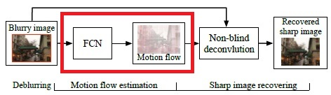
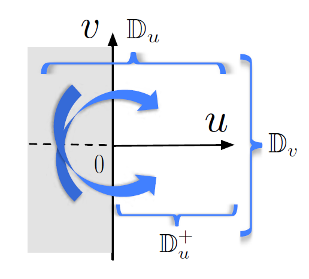
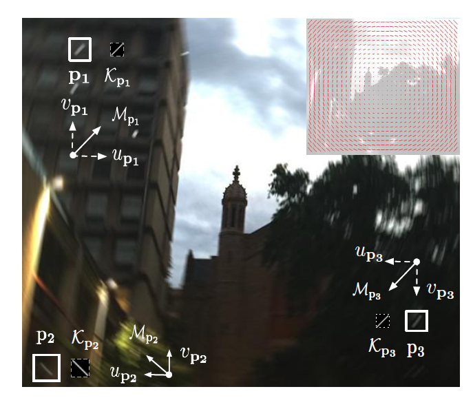
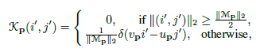
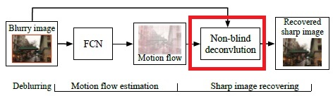
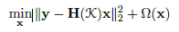
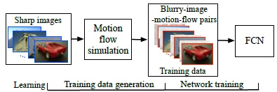
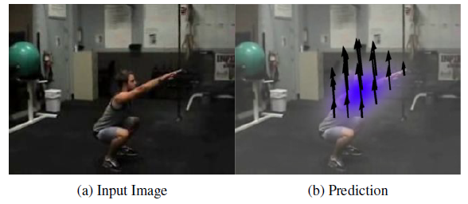

Estimating Motion Flow for Blur Removal¶
Heterogeneous Motion Blur Model¶
Y = unscharfes Bild \(P \times Q\)
K = heterogene motion blur kernel map mit verschiedenen motion blur kernel für jeden Pixel in X
∗ = allgemeiner convolution operator
X = latentes scharfes Bild
N = zusätzliches Bildrauschen
\(K_{(i, j)}\) repräsentiert den Kernel aus K, der auf den Pixel \((i, j)\) zentriert ist, der auf einem Bereich des Bildes wirkt.
vec() = vektorisiert eine Matrix
y = vec(Y)
x = vec(X)
n = vec(n)
\(H(K) ∈ \mathbb{R}^{PQ✖PQ}\) (jede Zeile entspricht einem blur kernel an jedem Pixel)
Estimating Motion Flow for Blur Removal¶
Motion Flow Estimation¶
Bei einem unscharfen Bild \(Y\) ist das Ziel, den blur kernel \(K\) zu bestimmen und ein unscharfes Bild \(X\) durch eine non-blind deconvolution zu einem scharfen Bild wiederherzustellen.

Quelle: [GYL+17]
Basierend auf den bereits festgelegten Modellen, können blur kernel modelliert werden. Diese sind mit jedem Pixel und dessen Bewegung verbunden.
Dabei besitzt ein Pixel \(P = (i, j)\) einen 2 dimensionalen Bewegungsvektor \(M_p = (u_p, v_p)\). Dieser Bewegungsvektor beschreibt die Bewegung des Pixel über den zeitlichen Verlauf des Belichtungszeitraum einer Kamera.
 Quelle: [GYL+17]
Ist \(u_p\) und \(v_p\) dabei jeweils Teil einer eigenen Domäne, dann ist \(M_p \in \mathbb{D}_u \times \mathbb{D}_v\)

Quelle: [GYL+17]
Der blur kernel erscheint auf jedem Pixel als Linienspur mit nonzero Komponenten nur entlang der Bewegungsspur.

Damit ist es möglich, eine heterogene motion blur estimation zu erreichen, indem die motion vectors auf allen Pixeln berechnet werden. Das Ergebnis aus allen motion Vektoren wird als motion flow \(M\) bezeichnet.
Deconvolution¶

Quelle: [GYL+17]
Das unscharfe Bild kann mithilfe des berechneten Motion Flow wieder zu einem scharfen Bild wiederhergestellt werden. Für die Wiederherstellung wird dabei das non-blind deconvolution Verfahren verwendet. Dafür wird ein Gaussian mixture model based regularizer \(\Omega(x)\)

Learning for Motion Flow Estimation¶
Die Berechnung des Motion Flow ist die wichtigste Funktion für das Wiederherstellen eines unscharfen Bildes in dieser Arbeit. Dazu müssen die Bewegungsunschärfe pixelweise bestimmt werden. Um das zu erreichen wird ein fully-convolutional deep neural network (FCN), welches den Motion Flow aus den unscharfen Bilder erstellt, benötigt.

Quelle: [GYL+17]
Für das Training des FCN wird ein Set \(\{(Y^t,M^t)\}^T_{t=1}\) von unscharfen Bilder mit bereits zugewiesen Motion Flows benötigt.
Das Ziel ist es nun, eine end-to-end mapping Funktion \(M=f(Y)\) zu lernen, welche ein unscharfes Bild \(Y\) dem dazugehörigen Motion Flow \(M\) zuweist.
Das stellt ein großes Problem in der Praxis dar, da es unmöglich ist, die Motion Flows für unterschiedliche, unscharfe Bilder zu erhalten.
Für Menschen ist es nicht möglich, die Bilder richtig zu labeln.
Die Lösung für dieses Problem ist die synthetische Herstellung und Simulation von Motion Flows für verschiedene, scharfe Bilder.
Domain¶
Um den Trainingsprozess zu vereinfachen, wird das FCN über eine diskrete output domain trainiert. Als Grundlage dafür dienen die Ergebnisse aus der optical flow estimation, welche der motion flow estimation sehr stark ähneln.

Quelle: [WGH15]
Für die Bewegeungsvektoren \(U\) und \(V\) werden dafür eine integer domain festgelegt und \(M =f(Y)\) als multi-class classification.
Dadurch erhält man die 2 Domänen, wobei \(\mathbb{Z}\) die integer domain ist.
Quelle: [GYL+17]
Zwei beliebige Bewegungsvektoren mit gleicher Länge und entgegengesetzter Richtungen, z.b. \((u_p, v_p)\) und \((-u_p, -v_p)\), das gleiche Unschärfemuster erzeugen, was den Lernprozess verwirren kann. Deshalb wird die Bewegung in horizontaler Richtung auf nicht-negative Werte eingeschränkt.